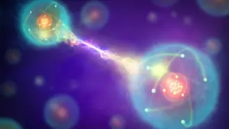
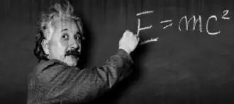
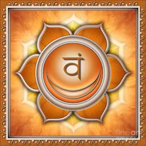

Qui puoi consultare la lista degli eventi in corso, e passati.
I primi sono i più recenti.
Clicca su ciascun elemento per saperne di più...
Muoversi con Fluidità con l'uso del Sostegno
Ciclo di quattro lezioni a distanza: 18:30 - 19:30
dal 16/10/2025 al 06/11/2025, Prenotazione obbligatoria.
La terra è solida.
Premendo su di essa, abbiamo il sostegno per assumere ogni posizione e compiere qualsiasi movimento.
Usando al meglio questo principio fondamentale possiamo potenziare il nostro corpo e la nostra forza.
Consentiamo alle ossa di nutrirsi e rigenenarsi.
Ci radichiamo e stabilizziamo emotivamente.
Tutto ciò grazie all'energia che con tale principio possiamo assorbire dalla Terra, il nostro pianeta.
Prenotazioni entro il 11/10/2025. Contributo: 70€
Reimpadronirsi del proprio corpo con il Metodo Feldenkrais
Che cos'è il Metodo, e come può esserti utile nella vita di tutti i giorni? Scoprilo con questa lezione!
Avrai l'occasione di conoscere Lauretana, insegnante certificata.
Prenotazioni entro il 8/10/2025. Contributo: 0€
L'attività e la condizione di riposo
Ciclo di quattro lezioni a distanza: 21:00 - 22:15
dal 30/03/2022 al 20/04/2022. Prenotazione obbligatoria.
Lezioni esperienziali e di approfondimento.
Ritrovare la condizione di riposo e saperla integrare durante le Attività del quotidiano è un’Arte che
consente alla Mente di ritornare alla propia centralità attenuando condizioni di stress inutili e
consentendo la rigenerazione di tutto il sistema.
Prenotazioni entro il 14/03/2022. Contributo: 60€
Meditazione Silenziosa
Lezione in presenza: 10:00 - 11:15
09/08/2021 e 23/08/2021, info....
Una semplice, ma non banale, sessione collettiva, in cui cogliamo l'occasione per riallineare
le intenzioni e i chakra.
Prenotazioni entro il 00/00/0000. Contributo: 00€
Meditazione Silenziosa e Trattamenti Reiki
Lezione in presenza: 10:00 - 11:15; poi 11:30 - 13:30
07/11/2020 e 21/11/2020, info....
Dopo una sessione di meditazione, per riallineare i chakra, si procede a una lezione di Reiki,
dove si mostra come manipolare le energie sottili a fine di guarigione.
Prenotazioni entro il 00/00/0000. Contributo: 00€
La potenza del bacino e dell'addome
Lezione in presenza: 10:00 - 13:30
22/03/2020, Seminario Esperienziale a tema Metodo Feldenkrais.
In questo Seminario esploreremo, attraverso percorsi di movimento adatti
ad ogni persona, il Bacino e la sua possibilità di movimento che si articola
nelle Anche e nella Colonna Lombare. Vedremo come il Bacino sia un Centro Motore
e Gravitazionale con la Funzione di Sostegno, di Equilibrio e di Potenza connesso a tutto il corpo .
Si lavorerà con i muscoli “addominali” imparando a differenziarli con il
resto dell’Addome che comprende le Pelvi, gli Psoas e il Diaframma.
Ripristinare la funzione del Bacino significa prevenire i mal di schiena ed
attenuare le contratture permanenti grazie ad una migliore distribuzione
del tono muscolare, avere la postura bilanciata con la testa ben sostenuta e
vigore e potenza in tutto il sistema mente-corpo.
Prenotazioni entro il 18/03/2020. Contributo: 45€
Work in Progress Psicofisico
Lezione a distanza: 15:00 - 18:00
29/02/2020, info....
Tema trattato: “L’equilibrio“: (il sostegno fluttuante quale elemento vitale delle relazioni).
Prenotazioni entro il 00/00/0000. Contributo: 00€
La fisica quantistica in due parti
Lezione a distanza: 15:30 - 16:30
01/02/2020 e 15/02/2020, info....

La fisica quantistica è stata la protagonista indiscussa degli ultimi cento anni,
ma ancora adesso, le sue implicazioni scientifiche e filosofiche non sono conosciute.
Nella prima parte vedremo i contributi dei principali protagonisti, spiegando i meccanismi
che rendono questa disciplina simile alle spiegazioni che molti mistici e frequentatori
dei mondi spirituali danno nella nostra realtà. Nella seconda parte vedremo alcune implicazioni
della fisica quantistica i cui sviluppi sono in corso e di cui si ignora la portata. Tra questi
parleremo di Entaglement, crittografia quantistica e Universo a mille mondi.
Prenotazioni entro il 00/00/0000. Contributo: 00€
Conferenza di fisica quantistica - Il Big Bang e la Creazione dell'Universo
Lezione in presenza: 15:30 - 17:00
30/11/2019, info....

Il Professor Gianluigi Colaiacomo fornirà una panoramica della teoria del Big Bang a tutti coloro
che desiderano comprendere come stia evolvendo la scienza e quanta rilevanza possa avere in un percorso
yogico o di crescita spirituale.
Non sono necessarie conoscenzescientifiche particolari, ma solo curiosità e disponibilità all’ascolto.
Questo seminario e’ di tipo divulgativo, diretto a tutti.
Il seminario inizierà con un riassunto di alcuni argomenti generali di fisica moderna trattati in un seminario
precedente.
Verrà, quindi, presentata la attuale teoria fisica del Big Bang, ossia la teoria dell’evoluzione dell’universo.
Parleremo delle nostre conoscenze dell’universo attuale e di come sia possibile risalire alla sua conformazione nei
primi istanti di vita.
Parleremo delle sue diverse fasi di evoluzione e di come si sia trasformato nell’universo in espansione che vediamo attorno a noi.
Verrà’ esaminato l’istante di creazione/emanazione dell’universo e la relazione con le sue prime fasi.
In una relazione tra il microcosmo e il macrocosmo si esamineranno le possibilità di un universo olografico.
Prenotazioni entro il 28/11/2019. Contributo: 00€
Reiki: corso di formazione per operatori di primo livello
Lezione in presenza: 09:30 - 10:30
dal 15/02/2014 al 16/02/2014, info....
“Il piano fisico”
Energia di auto guarigione naturale per sé stessi e per gli altri.
Introduzione alla storia del Maestro Mikao Usui, padre fondatore del Reiki.
Insegnamento dei suoi cinque principi e delle sue tecniche di base.
Si ricevono 4 iniziazioni per l’attivazione del canale energetico
principale che consente la trasmissione del Reiki a sé stessi
attraverso l’Autotrattamento ed agli altri, l’equilibratura dei
Chakra, i Trattamenti brevi ed i Trattamenti specifici.
Prenotazioni entro il 00/00/0000. Contributo: 00€
Intensivo di Yoga sui Chakra - Manipura, il Potere Personale
Lezione in presenza: 10:00 - 13:30
dal 00/00/0000 al 00/00/0000, info....
Il suo simbolo un triangolo, il suo colore il rosso. Il suo elemento è il fuoco.
Corrisponde all’apparato digestivo, legato alla nostra capacità di assimilare e metabolizzare
gli stimoli esterni, da esso dipende la capacità di modificare la realtà ordinaria.
E’ la sede del potere interiore, della volontà, dell’autocontrollo e dell’autoaffermazione.
In questo Chakra si conciliano le opposte polarità del voler dominare e del non saper reagire.
Prenotazioni entro il 00/00/0000. Contributo: 00€
Intensivo di Yoga sui Chakra - Svadisthana, le Emozioni
Lezione in presenza: 10:00 - 13:00
dal 00/00/0000 al 00/00/0000, info....

text here
Prenotazioni entro il 00/00/0000. Contributo: 00€
Meditazione Silenziosa e Trattamenti Reiki
Lezione in presenza: 11:30 - 13:00, 15:00 - 18:00
dal 00/00/0000 al 00/00/0000, info....
text here
Prenotazioni entro il 00/00/0000. Contributo: 00€